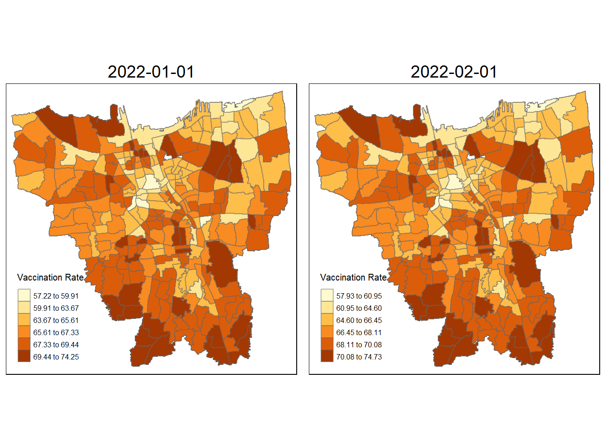

pacman::p_load(sf, sfdep, tmap, maptools, tidyverse, knitr, readxl, kableExtra, dplyr, plyr)Take-Home_Ex02
1 Overview
1.1 Context
As a result of the COVID-19 outbreak in Indonesia, a widespread immunization campaign is currently being conducted there. The program was launched on January 13, 2021, when President Joko Widodo had his vaccination at the presidential palace. Indonesia is ranked third in Asia and fifth overall for total dosages administered.
Wikipedia states that as of February 5, 2023, at 18:00 WIB (UTC+7), 204,266,655 individuals had received the first dose of the vaccine and 175,131,893 individuals had received the full course of vaccination; 69,597,474 of these individuals had received the booster dose or third dose, and 1,585,164 had received the fourth dose. With 103.46% of the population fully immunized, Jakarta has the highest rate, followed by Bali and the Special Region of Yogyakarta with 85.45% and 83.02%, respectively.
1.2 Objectives
Exploratory Spatial Data Analysis (ESDA) hold tremendous potential to address complex problems facing society. In this study, you are tasked to apply appropriate Local Indicators of Spatial Association (LISA) and Emerging Hot Spot Analysis (EHSA) to undercover the spatio-temporal trends of COVID-19 vaccination in DKI Jakarta.
1.3 Task
Choropleth Mapping and Analysis
Compute the monthly vaccination rate from July 2021 to June 2022 at sub-district (also known as kelurahan in Bahasa Indonesia) level,
Prepare the monthly vaccination rate maps by using appropriate tmap functions,
Describe the spatial patterns revealed by the choropleth maps (not more than 200 words).
1.4 Data used
| Type | Name | Format | Description | Source |
|---|---|---|---|---|
| Aspatial | Riwayat File Vaksinasi DKI Jakarta | csv | Daily vaccination data | Open Data Vaksinasi Provinsi DKI Jakarta |
| Geospatial | DKI Jakarta administration boundary 2019 | SHP | geoBoundaries data of Jakarta | Indonesia Geospatial |
For the Aspatial Data, I decided to use the dataset available on 1st Sept 2022 for this exercise.
1.5 Packages used
For this exercise, we’ll be using the following packages:
sf: Manage and process vector-based geospatial data in R
sfdep:
maptools: Convert Spatial objects into ppp format of spatstat
tmap: Plotting cartographic quality static point patterns maps or interactive maps by using leaflet API
tidyverse: a collection of functions, data, and documentation that extends the capabilities of base R.
knitr:
kableExtra:
dplyr:
readxl: The readxl package makes it easy to get data out of Excel and into R
plyr:
We will be using p_load function of pacman package to install and load required packages.
2 Data wrangling: Geospatial data
2.1 Importing Geospatial
jkt <- st_read(dsn = "data/geospatial/BATAS DESA DESEMBER 2019 DUKCAPIL DKI JAKARTA",
layer = "BATAS_DESA_DESEMBER_2019_DUKCAPIL_DKI_JAKARTA")Reading layer `BATAS_DESA_DESEMBER_2019_DUKCAPIL_DKI_JAKARTA' from data source
`C:\kt-x\is415-GAA\Take-Home_Ex\Take-Home_Ex02\data\geospatial\BATAS DESA DESEMBER 2019 DUKCAPIL DKI JAKARTA'
using driver `ESRI Shapefile'
Simple feature collection with 269 features and 161 fields
Geometry type: MULTIPOLYGON
Dimension: XY
Bounding box: xmin: 106.3831 ymin: -6.370815 xmax: 106.9728 ymax: -5.184322
Geodetic CRS: WGS 84glimpse(jkt)Rows: 269
Columns: 162
$ OBJECT_ID <dbl> 25477, 25478, 25397, 25400, 25378, 25379, 25390, 25382, 253…
$ KODE_DESA <chr> "3173031006", "3173031007", "3171031003", "3171031006", "31…
$ DESA <chr> "KEAGUNGAN", "GLODOK", "HARAPAN MULIA", "CEMPAKA BARU", "PU…
$ KODE <dbl> 317303, 317303, 317103, 317103, 310101, 310101, 317102, 310…
$ PROVINSI <chr> "DKI JAKARTA", "DKI JAKARTA", "DKI JAKARTA", "DKI JAKARTA",…
$ KAB_KOTA <chr> "JAKARTA BARAT", "JAKARTA BARAT", "JAKARTA PUSAT", "JAKARTA…
$ KECAMATAN <chr> "TAMAN SARI", "TAMAN SARI", "KEMAYORAN", "KEMAYORAN", "KEPU…
$ DESA_KELUR <chr> "KEAGUNGAN", "GLODOK", "HARAPAN MULIA", "CEMPAKA BARU", "PU…
$ JUMLAH_PEN <dbl> 21609, 9069, 29085, 41913, 6947, 7059, 15793, 5891, 33383, …
$ JUMLAH_KK <dbl> 7255, 3273, 9217, 13766, 2026, 2056, 5599, 1658, 11276, 128…
$ LUAS_WILAY <dbl> 0.36, 0.37, 0.53, 0.97, 0.93, 0.95, 1.76, 1.14, 0.47, 1.31,…
$ KEPADATAN <dbl> 60504, 24527, 54465, 42993, 7497, 7401, 8971, 5156, 71628, …
$ PERPINDAHA <dbl> 102, 25, 131, 170, 17, 26, 58, 13, 113, 178, 13, 87, 56, 12…
$ JUMLAH_MEN <dbl> 68, 52, 104, 151, 14, 32, 36, 10, 60, 92, 5, 83, 21, 70, 93…
$ PERUBAHAN <dbl> 20464, 8724, 27497, 38323, 6853, 6993, 15006, 5807, 31014, …
$ WAJIB_KTP <dbl> 16027, 7375, 20926, 30264, 4775, 4812, 12559, 3989, 24784, …
$ SILAM <dbl> 15735, 1842, 26328, 36813, 6941, 7057, 7401, 5891, 23057, 2…
$ KRISTEN <dbl> 2042, 2041, 1710, 3392, 6, 0, 3696, 0, 4058, 5130, 1, 3061,…
$ KHATOLIK <dbl> 927, 1460, 531, 1082, 0, 0, 1602, 0, 2100, 2575, 0, 1838, 7…
$ HINDU <dbl> 15, 9, 42, 127, 0, 0, 622, 0, 25, 27, 0, 9, 115, 47, 382, 7…
$ BUDHA <dbl> 2888, 3716, 469, 495, 0, 2, 2462, 0, 4134, 4740, 5, 1559, 3…
$ KONGHUCU <dbl> 2, 1, 5, 1, 0, 0, 10, 0, 9, 10, 0, 4, 1, 1, 4, 0, 2, 0, 0, …
$ KEPERCAYAA <dbl> 0, 0, 0, 3, 0, 0, 0, 0, 0, 0, 0, 2, 0, 22, 0, 3, 3, 0, 0, 0…
$ PRIA <dbl> 11049, 4404, 14696, 21063, 3547, 3551, 7833, 2954, 16887, 1…
$ WANITA <dbl> 10560, 4665, 14389, 20850, 3400, 3508, 7960, 2937, 16496, 1…
$ BELUM_KAWI <dbl> 10193, 4240, 14022, 20336, 3366, 3334, 7578, 2836, 15860, 1…
$ KAWIN <dbl> 10652, 4364, 13450, 19487, 3224, 3404, 7321, 2791, 15945, 1…
$ CERAI_HIDU <dbl> 255, 136, 430, 523, 101, 80, 217, 44, 381, 476, 39, 305, 10…
$ CERAI_MATI <dbl> 509, 329, 1183, 1567, 256, 241, 677, 220, 1197, 993, 79, 90…
$ U0 <dbl> 1572, 438, 2232, 3092, 640, 648, 802, 585, 2220, 2399, 376,…
$ U5 <dbl> 1751, 545, 2515, 3657, 645, 684, 995, 588, 2687, 2953, 331,…
$ U10 <dbl> 1703, 524, 2461, 3501, 620, 630, 1016, 513, 2653, 2754, 309…
$ U15 <dbl> 1493, 521, 2318, 3486, 669, 671, 1106, 548, 2549, 2666, 328…
$ U20 <dbl> 1542, 543, 2113, 3098, 619, 609, 1081, 491, 2313, 2515, 290…
$ U25 <dbl> 1665, 628, 2170, 3024, 639, 582, 1002, 523, 2446, 2725, 325…
$ U30 <dbl> 1819, 691, 2363, 3188, 564, 592, 1236, 478, 2735, 3122, 329…
$ U35 <dbl> 1932, 782, 2595, 3662, 590, 572, 1422, 504, 3034, 3385, 317…
$ U40 <dbl> 1828, 675, 2371, 3507, 480, 486, 1200, 397, 2689, 3037, 250…
$ U45 <dbl> 1600, 607, 2250, 3391, 421, 457, 1163, 365, 2470, 2597, 206…
$ U50 <dbl> 1408, 619, 1779, 2696, 346, 369, 1099, 288, 2129, 2282, 134…
$ U55 <dbl> 1146, 602, 1379, 1909, 252, 318, 979, 235, 1843, 1930, 129,…
$ U60 <dbl> 836, 614, 1054, 1397, 197, 211, 880, 162, 1386, 1394, 75, 9…
$ U65 <dbl> 587, 555, 654, 970, 122, 114, 747, 111, 958, 932, 50, 706, …
$ U70 <dbl> 312, 311, 411, 631, 69, 55, 488, 65, 554, 573, 38, 412, 129…
$ U75 <dbl> 415, 414, 420, 704, 74, 61, 577, 38, 717, 642, 37, 528, 125…
$ TIDAK_BELU <dbl> 3426, 1200, 4935, 7328, 1306, 1318, 2121, 973, 5075, 6089, …
$ BELUM_TAMA <dbl> 1964, 481, 2610, 3763, 730, 676, 1278, 732, 3241, 3184, 383…
$ TAMAT_SD <dbl> 2265, 655, 2346, 2950, 1518, 2054, 1169, 1266, 4424, 3620, …
$ SLTP <dbl> 3660, 1414, 3167, 5138, 906, 1357, 2236, 852, 5858, 6159, 5…
$ SLTA <dbl> 8463, 3734, 12172, 16320, 2040, 1380, 5993, 1570, 12448, 14…
$ DIPLOMA_I <dbl> 81, 23, 84, 179, 22, 15, 43, 36, 85, 83, 4, 63, 27, 79, 110…
$ DIPLOMA_II <dbl> 428, 273, 1121, 1718, 101, 59, 573, 97, 604, 740, 25, 734, …
$ DIPLOMA_IV <dbl> 1244, 1241, 2477, 4181, 314, 191, 2199, 357, 1582, 1850, 83…
$ STRATA_II <dbl> 74, 46, 166, 315, 10, 8, 168, 8, 63, 92, 5, 174, 125, 122, …
$ STRATA_III <dbl> 4, 2, 7, 21, 0, 1, 13, 0, 3, 9, 0, 16, 8, 7, 75, 49, 65, 14…
$ BELUM_TIDA <dbl> 3927, 1388, 5335, 8105, 1788, 1627, 2676, 1129, 5985, 6820,…
$ APARATUR_P <dbl> 81, 10, 513, 931, 246, 75, 156, 160, 132, 79, 23, 145, 369,…
$ TENAGA_PEN <dbl> 70, 43, 288, 402, 130, 93, 81, 123, 123, 73, 45, 109, 30, 1…
$ WIRASWASTA <dbl> 8974, 3832, 10662, 14925, 788, 728, 6145, 819, 12968, 14714…
$ PERTANIAN <dbl> 1, 0, 1, 3, 2, 2, 1, 3, 2, 5, 1, 1, 0, 0, 2, 5, 2, 1, 13, 4…
$ NELAYAN <dbl> 0, 0, 2, 0, 960, 1126, 1, 761, 1, 2, 673, 0, 0, 0, 0, 0, 2,…
$ AGAMA_DAN <dbl> 6, 6, 5, 40, 0, 0, 49, 2, 10, 11, 0, 54, 15, 16, 21, 14, 17…
$ PELAJAR_MA <dbl> 4018, 1701, 6214, 9068, 1342, 1576, 3135, 1501, 6823, 6866,…
$ TENAGA_KES <dbl> 28, 29, 80, 142, 34, 26, 60, 11, 48, 55, 16, 68, 89, 93, 28…
$ PENSIUNAN <dbl> 57, 50, 276, 498, 20, 7, 59, 14, 56, 75, 2, 97, 53, 146, 57…
$ LAINNYA <dbl> 4447, 2010, 5709, 7799, 1637, 1799, 3430, 1368, 7235, 7206,…
$ GENERATED <chr> "30 Juni 2019", "30 Juni 2019", "30 Juni 2019", "30 Juni 20…
$ KODE_DES_1 <chr> "3173031006", "3173031007", "3171031003", "3171031006", "31…
$ BELUM_ <dbl> 3099, 1032, 4830, 7355, 1663, 1704, 2390, 1213, 5330, 5605,…
$ MENGUR_ <dbl> 4447, 2026, 5692, 7692, 1576, 1731, 3500, 1323, 7306, 7042,…
$ PELAJAR_ <dbl> 3254, 1506, 6429, 8957, 1476, 1469, 3185, 1223, 6993, 6858,…
$ PENSIUNA_1 <dbl> 80, 65, 322, 603, 24, 8, 70, 20, 75, 97, 2, 132, 67, 165, 6…
$ PEGAWAI_ <dbl> 48, 5, 366, 612, 223, 72, 65, 143, 73, 48, 15, 89, 91, 174,…
$ TENTARA <dbl> 4, 0, 41, 57, 3, 0, 74, 1, 20, 12, 2, 11, 90, 340, 41, 52, …
$ KEPOLISIAN <dbl> 10, 1, 16, 42, 11, 8, 2, 9, 17, 7, 3, 9, 165, 15, 17, 28, 1…
$ PERDAG_ <dbl> 31, 5, 1, 3, 6, 1, 2, 4, 3, 1, 4, 0, 1, 2, 9, 2, 8, 2, 5, 9…
$ PETANI <dbl> 0, 0, 1, 2, 0, 1, 1, 0, 1, 1, 1, 2, 0, 0, 1, 2, 0, 1, 6, 1,…
$ PETERN_ <dbl> 0, 0, 0, 0, 0, 0, 0, 1, 0, 0, 0, 0, 0, 0, 0, 0, 0, 0, 0, 0,…
$ NELAYAN_1 <dbl> 1, 0, 1, 0, 914, 1071, 0, 794, 0, 1, 663, 0, 0, 0, 0, 0, 2,…
$ INDUSTR_ <dbl> 7, 3, 4, 3, 1, 3, 0, 0, 1, 7, 0, 0, 2, 2, 1, 3, 12, 1, 8, 4…
$ KONSTR_ <dbl> 3, 0, 2, 6, 3, 8, 1, 6, 1, 5, 10, 0, 2, 5, 7, 4, 7, 1, 6, 2…
$ TRANSP_ <dbl> 2, 0, 7, 4, 0, 0, 0, 0, 0, 3, 0, 0, 0, 0, 6, 3, 2, 1, 2, 5,…
$ KARYAW_ <dbl> 6735, 3034, 7347, 10185, 237, 264, 4319, 184, 9405, 10844, …
$ KARYAW1 <dbl> 9, 2, 74, 231, 4, 0, 16, 1, 13, 10, 1, 24, 17, 29, 187, 246…
$ KARYAW1_1 <dbl> 0, 0, 5, 15, 0, 0, 0, 1, 0, 1, 0, 0, 2, 4, 7, 9, 3, 1, 6, 5…
$ KARYAW1_12 <dbl> 23, 4, 25, 35, 141, 50, 16, 157, 6, 9, 40, 11, 11, 15, 22, …
$ BURUH <dbl> 515, 155, 971, 636, 63, 218, 265, 55, 1085, 652, 17, 357, 2…
$ BURUH_ <dbl> 1, 0, 0, 0, 2, 1, 1, 0, 0, 1, 1, 0, 0, 0, 1, 2, 1, 0, 1, 1,…
$ BURUH1 <dbl> 0, 0, 1, 0, 1, 25, 0, 2, 0, 1, 1, 0, 0, 0, 0, 0, 0, 0, 0, 0…
$ BURUH1_1 <dbl> 0, 0, 0, 0, 0, 0, 0, 0, 0, 0, 0, 0, 0, 0, 0, 0, 0, 0, 1, 0,…
$ PEMBANT_ <dbl> 1, 1, 4, 1, 1, 0, 7, 0, 5, 1, 0, 6, 1, 10, 11, 9, 8, 3, 4, …
$ TUKANG <dbl> 0, 0, 0, 0, 0, 0, 0, 0, 0, 1, 0, 0, 0, 0, 0, 1, 0, 0, 0, 0,…
$ TUKANG_1 <dbl> 1, 0, 0, 0, 0, 0, 0, 0, 0, 0, 0, 0, 0, 0, 0, 0, 0, 0, 0, 0,…
$ TUKANG_12 <dbl> 0, 0, 0, 0, 0, 0, 0, 0, 0, 0, 0, 0, 0, 0, 0, 0, 0, 0, 0, 0,…
$ TUKANG__13 <dbl> 1, 1, 0, 1, 0, 1, 0, 0, 0, 1, 0, 0, 0, 1, 1, 0, 0, 0, 0, 0,…
$ TUKANG__14 <dbl> 0, 0, 0, 0, 0, 0, 0, 0, 0, 0, 0, 0, 0, 0, 0, 0, 0, 0, 0, 0,…
$ TUKANG__15 <dbl> 1, 0, 0, 1, 0, 0, 0, 0, 0, 1, 0, 0, 0, 0, 0, 0, 0, 0, 1, 1,…
$ TUKANG__16 <dbl> 7, 4, 10, 14, 0, 0, 2, 0, 7, 8, 0, 8, 1, 0, 3, 2, 2, 0, 17,…
$ TUKANG__17 <dbl> 1, 0, 0, 0, 0, 0, 0, 0, 0, 1, 0, 0, 0, 0, 0, 0, 0, 0, 0, 0,…
$ PENATA <dbl> 0, 0, 0, 0, 0, 0, 1, 0, 0, 0, 0, 0, 1, 0, 0, 0, 0, 0, 0, 0,…
$ PENATA_ <dbl> 0, 0, 0, 0, 0, 0, 0, 0, 0, 0, 0, 0, 0, 0, 0, 0, 0, 0, 0, 0,…
$ PENATA1_1 <dbl> 0, 0, 0, 1, 0, 0, 0, 0, 0, 1, 0, 2, 0, 1, 0, 0, 0, 0, 0, 0,…
$ MEKANIK <dbl> 11, 1, 10, 8, 0, 0, 4, 0, 7, 8, 0, 9, 0, 15, 10, 10, 3, 0, …
$ SENIMAN_ <dbl> 4, 0, 12, 28, 0, 0, 2, 0, 3, 4, 0, 9, 6, 7, 14, 13, 17, 22,…
$ TABIB <dbl> 1, 0, 0, 0, 0, 0, 1, 0, 0, 1, 0, 0, 0, 0, 0, 1, 0, 0, 0, 0,…
$ PARAJI_ <dbl> 0, 0, 0, 0, 0, 0, 0, 0, 0, 0, 0, 0, 0, 0, 0, 0, 0, 0, 0, 0,…
$ PERANCA_ <dbl> 0, 0, 0, 0, 0, 0, 0, 0, 0, 0, 0, 1, 0, 2, 1, 0, 1, 2, 0, 0,…
$ PENTER_ <dbl> 1, 0, 0, 0, 0, 0, 1, 0, 0, 0, 0, 0, 0, 0, 2, 0, 2, 0, 0, 0,…
$ IMAM_M <dbl> 0, 0, 0, 0, 0, 0, 0, 0, 0, 0, 0, 0, 0, 0, 0, 0, 0, 0, 0, 0,…
$ PENDETA <dbl> 2, 4, 5, 33, 0, 0, 20, 0, 10, 8, 0, 30, 14, 14, 18, 12, 1, …
$ PASTOR <dbl> 0, 1, 0, 1, 0, 0, 8, 0, 0, 0, 0, 23, 0, 0, 0, 0, 2, 0, 0, 0…
$ WARTAWAN <dbl> 7, 1, 16, 27, 0, 0, 4, 0, 8, 6, 0, 9, 5, 9, 26, 30, 11, 7, …
$ USTADZ <dbl> 6, 1, 1, 5, 1, 0, 0, 0, 0, 1, 0, 0, 0, 1, 0, 0, 0, 0, 0, 0,…
$ JURU_M <dbl> 0, 0, 0, 0, 0, 0, 0, 0, 0, 0, 0, 0, 0, 0, 1, 2, 0, 0, 0, 0,…
$ PROMOT <dbl> 0, 0, 0, 0, 0, 0, 0, 0, 0, 0, 0, 0, 0, 0, 0, 0, 0, 0, 0, 0,…
$ ANGGOTA_ <dbl> 0, 1, 0, 0, 0, 0, 0, 0, 1, 0, 0, 1, 0, 0, 2, 1, 2, 1, 0, 0,…
$ ANGGOTA1 <dbl> 0, 0, 0, 0, 0, 0, 0, 0, 0, 0, 0, 0, 0, 0, 0, 1, 0, 0, 0, 1,…
$ ANGGOTA1_1 <dbl> 0, 0, 0, 0, 0, 0, 0, 0, 0, 0, 0, 0, 0, 0, 0, 0, 0, 0, 0, 0,…
$ PRESIDEN <dbl> 0, 0, 0, 0, 0, 0, 0, 0, 0, 0, 0, 0, 0, 0, 0, 0, 0, 0, 0, 0,…
$ WAKIL_PRES <dbl> 0, 0, 0, 0, 0, 0, 0, 0, 0, 0, 0, 0, 0, 0, 0, 0, 1, 0, 0, 0,…
$ ANGGOTA1_2 <dbl> 0, 0, 0, 0, 0, 0, 0, 0, 0, 0, 0, 0, 0, 0, 1, 0, 0, 0, 0, 0,…
$ ANGGOTA1_3 <dbl> 0, 0, 0, 0, 0, 0, 0, 0, 0, 0, 0, 0, 0, 0, 1, 0, 0, 0, 0, 0,…
$ DUTA_B <dbl> 0, 0, 0, 0, 0, 0, 0, 0, 0, 0, 0, 0, 0, 0, 0, 0, 1, 0, 0, 0,…
$ GUBERNUR <dbl> 0, 0, 0, 0, 0, 0, 0, 0, 0, 0, 0, 0, 0, 0, 0, 0, 1, 0, 0, 0,…
$ WAKIL_GUBE <dbl> 0, 0, 0, 0, 0, 0, 0, 0, 0, 0, 0, 0, 0, 0, 0, 0, 0, 0, 0, 0,…
$ BUPATI <dbl> 0, 0, 0, 0, 0, 0, 0, 0, 0, 0, 0, 0, 0, 0, 0, 0, 0, 0, 0, 0,…
$ WAKIL_BUPA <dbl> 0, 0, 0, 0, 0, 0, 0, 0, 0, 0, 0, 0, 0, 0, 0, 0, 0, 0, 0, 0,…
$ WALIKOTA <dbl> 0, 0, 0, 0, 0, 0, 0, 0, 0, 0, 0, 0, 0, 0, 0, 0, 0, 0, 0, 0,…
$ WAKIL_WALI <dbl> 0, 0, 0, 0, 0, 0, 0, 0, 0, 0, 0, 0, 0, 0, 0, 0, 0, 0, 0, 0,…
$ ANGGOTA1_4 <dbl> 0, 0, 0, 0, 0, 0, 0, 0, 0, 0, 0, 0, 0, 0, 3, 0, 1, 0, 0, 1,…
$ ANGGOTA1_5 <dbl> 0, 0, 0, 0, 0, 0, 0, 0, 0, 0, 0, 0, 0, 0, 0, 0, 0, 0, 0, 1,…
$ DOSEN <dbl> 3, 2, 23, 36, 1, 2, 11, 0, 3, 5, 0, 14, 6, 28, 69, 73, 58, …
$ GURU <dbl> 72, 40, 272, 378, 118, 72, 69, 116, 126, 71, 36, 97, 23, 10…
$ PILOT <dbl> 1, 0, 2, 3, 0, 0, 0, 0, 0, 0, 0, 0, 0, 0, 3, 3, 1, 0, 0, 0,…
$ PENGACARA_ <dbl> 4, 1, 8, 22, 0, 0, 5, 0, 5, 4, 0, 4, 3, 12, 24, 26, 40, 13,…
$ NOTARIS <dbl> 0, 0, 3, 5, 0, 0, 4, 0, 0, 0, 0, 5, 0, 5, 10, 3, 7, 1, 0, 4…
$ ARSITEK <dbl> 1, 0, 2, 3, 0, 0, 2, 0, 0, 0, 0, 4, 1, 2, 7, 3, 9, 2, 0, 4,…
$ AKUNTA_ <dbl> 1, 0, 0, 0, 0, 0, 0, 0, 0, 0, 0, 2, 0, 1, 0, 0, 2, 0, 3, 1,…
$ KONSUL_ <dbl> 1, 0, 2, 11, 0, 0, 4, 0, 0, 0, 0, 6, 2, 3, 10, 8, 12, 2, 1,…
$ DOKTER <dbl> 16, 32, 35, 68, 0, 1, 63, 0, 27, 32, 1, 63, 48, 60, 236, 12…
$ BIDAN <dbl> 3, 1, 9, 18, 12, 8, 1, 3, 3, 3, 7, 3, 10, 10, 7, 2, 3, 2, 1…
$ PERAWAT <dbl> 7, 0, 25, 44, 12, 10, 3, 6, 12, 20, 6, 7, 26, 16, 21, 20, 9…
$ APOTEK_ <dbl> 0, 0, 2, 3, 1, 0, 0, 0, 1, 2, 0, 1, 2, 3, 3, 3, 3, 1, 0, 1,…
$ PSIKIATER <dbl> 0, 0, 1, 0, 0, 0, 0, 0, 0, 0, 0, 0, 1, 0, 3, 2, 1, 0, 0, 0,…
$ PENYIA_ <dbl> 0, 0, 0, 0, 0, 0, 0, 0, 0, 0, 0, 0, 0, 0, 2, 0, 0, 0, 0, 0,…
$ PENYIA1 <dbl> 0, 0, 0, 0, 0, 0, 0, 0, 0, 0, 0, 0, 0, 0, 0, 0, 0, 0, 1, 0,…
$ PELAUT <dbl> 0, 0, 6, 16, 1, 1, 0, 14, 2, 4, 1, 2, 4, 2, 10, 13, 2, 0, 3…
$ PENELITI <dbl> 0, 1, 0, 0, 0, 0, 1, 0, 0, 0, 0, 0, 0, 0, 3, 0, 1, 0, 2, 0,…
$ SOPIR <dbl> 65, 3, 94, 123, 0, 1, 61, 0, 76, 79, 0, 63, 44, 101, 71, 59…
$ PIALAN <dbl> 0, 0, 0, 0, 0, 0, 0, 0, 0, 0, 0, 0, 0, 0, 0, 0, 0, 0, 0, 0,…
$ PARANORMAL <dbl> 0, 0, 0, 0, 0, 0, 0, 0, 0, 1, 0, 0, 0, 0, 0, 1, 0, 0, 0, 0,…
$ PEDAGA_ <dbl> 379, 126, 321, 562, 11, 10, 412, 15, 202, 225, 0, 271, 212,…
$ PERANG_ <dbl> 0, 0, 0, 0, 0, 0, 0, 0, 0, 0, 0, 0, 0, 0, 0, 0, 0, 0, 0, 1,…
$ KEPALA_ <dbl> 0, 0, 0, 0, 0, 0, 0, 0, 0, 0, 0, 0, 0, 0, 0, 0, 0, 0, 0, 0,…
$ BIARAW_ <dbl> 0, 1, 0, 0, 0, 0, 22, 0, 3, 0, 0, 2, 1, 0, 4, 0, 17, 1, 0, …
$ WIRASWAST_ <dbl> 1370, 611, 1723, 3099, 131, 119, 1128, 259, 2321, 2677, 79,…
$ LAINNYA_12 <dbl> 94, 57, 82, 122, 12, 10, 41, 6, 89, 158, 24, 37, 15, 94, 12…
$ LUAS_DESA <dbl> 25476, 25477, 25396, 25399, 25377, 25378, 25389, 25381, 253…
$ KODE_DES_3 <chr> "3173031006", "3173031007", "3171031003", "3171031006", "31…
$ DESA_KEL_1 <chr> "KEAGUNGAN", "GLODOK", "HARAPAN MULIA", "CEMPAKA BARU", "PU…
$ KODE_12 <dbl> 317303, 317303, 317103, 317103, 310101, 310101, 317102, 310…
$ geometry <MULTIPOLYGON [°]> MULTIPOLYGON (((106.8164 -6..., MULTIPOLYGON (…2.2 Data Pre-processing
We got to first ensure 2 things: validity of geomeetries and if there are missing values that could affect the later section of calculations and visualisations.
Reference for this section of Choropleth Mapping was taken from the senior sample submissions for the code for this section, with credit to Take-Home Exercise 1: Analysing and Visualising Spatio-temporal Patterns of COVID-19 in DKI Jakarta, Indonesia by MEGAN SIM TZE YEN.
2.2.1 Validity of geometry
Using st_is_valid function to check
length(which(st_is_valid(jkt) == FALSE))[1] 0Since theres no invalids geometrics, we move to missing values
2.2.2 Missing values
jkt[rowSums(is.na(jkt))!=0,]Simple feature collection with 2 features and 161 fields
Geometry type: MULTIPOLYGON
Dimension: XY
Bounding box: xmin: 106.8412 ymin: -6.154036 xmax: 106.8612 ymax: -6.144973
Geodetic CRS: WGS 84
OBJECT_ID KODE_DESA DESA KODE PROVINSI KAB_KOTA KECAMATAN
243 25645 31888888 DANAU SUNTER 318888 DKI JAKARTA <NA> <NA>
244 25646 31888888 DANAU SUNTER DLL 318888 DKI JAKARTA <NA> <NA>
DESA_KELUR JUMLAH_PEN JUMLAH_KK LUAS_WILAY KEPADATAN PERPINDAHA JUMLAH_MEN
243 <NA> 0 0 0 0 0 0
244 <NA> 0 0 0 0 0 0
PERUBAHAN WAJIB_KTP SILAM KRISTEN KHATOLIK HINDU BUDHA KONGHUCU KEPERCAYAA
243 0 0 0 0 0 0 0 0 0
244 0 0 0 0 0 0 0 0 0
PRIA WANITA BELUM_KAWI KAWIN CERAI_HIDU CERAI_MATI U0 U5 U10 U15 U20 U25
243 0 0 0 0 0 0 0 0 0 0 0 0
244 0 0 0 0 0 0 0 0 0 0 0 0
U30 U35 U40 U45 U50 U55 U60 U65 U70 U75 TIDAK_BELU BELUM_TAMA TAMAT_SD SLTP
243 0 0 0 0 0 0 0 0 0 0 0 0 0 0
244 0 0 0 0 0 0 0 0 0 0 0 0 0 0
SLTA DIPLOMA_I DIPLOMA_II DIPLOMA_IV STRATA_II STRATA_III BELUM_TIDA
243 0 0 0 0 0 0 0
244 0 0 0 0 0 0 0
APARATUR_P TENAGA_PEN WIRASWASTA PERTANIAN NELAYAN AGAMA_DAN PELAJAR_MA
243 0 0 0 0 0 0 0
244 0 0 0 0 0 0 0
TENAGA_KES PENSIUNAN LAINNYA GENERATED KODE_DES_1 BELUM_ MENGUR_ PELAJAR_
243 0 0 0 <NA> <NA> 0 0 0
244 0 0 0 <NA> <NA> 0 0 0
PENSIUNA_1 PEGAWAI_ TENTARA KEPOLISIAN PERDAG_ PETANI PETERN_ NELAYAN_1
243 0 0 0 0 0 0 0 0
244 0 0 0 0 0 0 0 0
INDUSTR_ KONSTR_ TRANSP_ KARYAW_ KARYAW1 KARYAW1_1 KARYAW1_12 BURUH BURUH_
243 0 0 0 0 0 0 0 0 0
244 0 0 0 0 0 0 0 0 0
BURUH1 BURUH1_1 PEMBANT_ TUKANG TUKANG_1 TUKANG_12 TUKANG__13 TUKANG__14
243 0 0 0 0 0 0 0 0
244 0 0 0 0 0 0 0 0
TUKANG__15 TUKANG__16 TUKANG__17 PENATA PENATA_ PENATA1_1 MEKANIK SENIMAN_
243 0 0 0 0 0 0 0 0
244 0 0 0 0 0 0 0 0
TABIB PARAJI_ PERANCA_ PENTER_ IMAM_M PENDETA PASTOR WARTAWAN USTADZ JURU_M
243 0 0 0 0 0 0 0 0 0 0
244 0 0 0 0 0 0 0 0 0 0
PROMOT ANGGOTA_ ANGGOTA1 ANGGOTA1_1 PRESIDEN WAKIL_PRES ANGGOTA1_2
243 0 0 0 0 0 0 0
244 0 0 0 0 0 0 0
ANGGOTA1_3 DUTA_B GUBERNUR WAKIL_GUBE BUPATI WAKIL_BUPA WALIKOTA WAKIL_WALI
243 0 0 0 0 0 0 0 0
244 0 0 0 0 0 0 0 0
ANGGOTA1_4 ANGGOTA1_5 DOSEN GURU PILOT PENGACARA_ NOTARIS ARSITEK AKUNTA_
243 0 0 0 0 0 0 0 0 0
244 0 0 0 0 0 0 0 0 0
KONSUL_ DOKTER BIDAN PERAWAT APOTEK_ PSIKIATER PENYIA_ PENYIA1 PELAUT
243 0 0 0 0 0 0 0 0 0
244 0 0 0 0 0 0 0 0 0
PENELITI SOPIR PIALAN PARANORMAL PEDAGA_ PERANG_ KEPALA_ BIARAW_ WIRASWAST_
243 0 0 0 0 0 0 0 0 0
244 0 0 0 0 0 0 0 0 0
LAINNYA_12 LUAS_DESA KODE_DES_3 DESA_KEL_1 KODE_12
243 0 0 <NA> <NA> 0
244 0 0 <NA> <NA> 0
geometry
243 MULTIPOLYGON (((106.8612 -6...
244 MULTIPOLYGON (((106.8504 -6...From the output, Columns with missing values (KAB_KOTA (City), KECAMATAN (District) and DESA_KELUR (Sub-District)) as well as other fields since its from the same 2 rows (243 & 244), we can just remove these.
jkt <- na.omit(jkt,c("DESA_KELUR"))jkt[rowSums(is.na(jkt))!=0,]Simple feature collection with 0 features and 161 fields
Bounding box: xmin: NA ymin: NA xmax: NA ymax: NA
Geodetic CRS: WGS 84
[1] OBJECT_ID KODE_DESA DESA KODE PROVINSI KAB_KOTA
[7] KECAMATAN DESA_KELUR JUMLAH_PEN JUMLAH_KK LUAS_WILAY KEPADATAN
[13] PERPINDAHA JUMLAH_MEN PERUBAHAN WAJIB_KTP SILAM KRISTEN
[19] KHATOLIK HINDU BUDHA KONGHUCU KEPERCAYAA PRIA
[25] WANITA BELUM_KAWI KAWIN CERAI_HIDU CERAI_MATI U0
[31] U5 U10 U15 U20 U25 U30
[37] U35 U40 U45 U50 U55 U60
[43] U65 U70 U75 TIDAK_BELU BELUM_TAMA TAMAT_SD
[49] SLTP SLTA DIPLOMA_I DIPLOMA_II DIPLOMA_IV STRATA_II
[55] STRATA_III BELUM_TIDA APARATUR_P TENAGA_PEN WIRASWASTA PERTANIAN
[61] NELAYAN AGAMA_DAN PELAJAR_MA TENAGA_KES PENSIUNAN LAINNYA
[67] GENERATED KODE_DES_1 BELUM_ MENGUR_ PELAJAR_ PENSIUNA_1
[73] PEGAWAI_ TENTARA KEPOLISIAN PERDAG_ PETANI PETERN_
[79] NELAYAN_1 INDUSTR_ KONSTR_ TRANSP_ KARYAW_ KARYAW1
[85] KARYAW1_1 KARYAW1_12 BURUH BURUH_ BURUH1 BURUH1_1
[91] PEMBANT_ TUKANG TUKANG_1 TUKANG_12 TUKANG__13 TUKANG__14
[97] TUKANG__15 TUKANG__16 TUKANG__17 PENATA PENATA_ PENATA1_1
[103] MEKANIK SENIMAN_ TABIB PARAJI_ PERANCA_ PENTER_
[109] IMAM_M PENDETA PASTOR WARTAWAN USTADZ JURU_M
[115] PROMOT ANGGOTA_ ANGGOTA1 ANGGOTA1_1 PRESIDEN WAKIL_PRES
[121] ANGGOTA1_2 ANGGOTA1_3 DUTA_B GUBERNUR WAKIL_GUBE BUPATI
[127] WAKIL_BUPA WALIKOTA WAKIL_WALI ANGGOTA1_4 ANGGOTA1_5 DOSEN
[133] GURU PILOT PENGACARA_ NOTARIS ARSITEK AKUNTA_
[139] KONSUL_ DOKTER BIDAN PERAWAT APOTEK_ PSIKIATER
[145] PENYIA_ PENYIA1 PELAUT PENELITI SOPIR PIALAN
[151] PARANORMAL PEDAGA_ PERANG_ KEPALA_ BIARAW_ WIRASWAST_
[157] LAINNYA_12 LUAS_DESA KODE_DES_3 DESA_KEL_1 KODE_12 geometry
<0 rows> (or 0-length row.names)2.2.3 Validate & Transform jkt CRS
Moving on, we gotta to validate the CRS of jarkarta
# retrieves the crs
st_crs(jkt)Coordinate Reference System:
User input: WGS 84
wkt:
GEOGCRS["WGS 84",
DATUM["World Geodetic System 1984",
ELLIPSOID["WGS 84",6378137,298.257223563,
LENGTHUNIT["metre",1]]],
PRIMEM["Greenwich",0,
ANGLEUNIT["degree",0.0174532925199433]],
CS[ellipsoidal,2],
AXIS["latitude",north,
ORDER[1],
ANGLEUNIT["degree",0.0174532925199433]],
AXIS["longitude",east,
ORDER[2],
ANGLEUNIT["degree",0.0174532925199433]],
ID["EPSG",4326]]So the assigned coordinates system is WGS 84 (aka World Geodetic System 1984) therefore, we got to change it to crs of Indonesia, DGN95 using the code of 23845.
jkt <- st_transform(jkt, 23845)st_crs(jkt)Coordinate Reference System:
User input: EPSG:23845
wkt:
PROJCRS["DGN95 / Indonesia TM-3 zone 54.1",
BASEGEOGCRS["DGN95",
DATUM["Datum Geodesi Nasional 1995",
ELLIPSOID["WGS 84",6378137,298.257223563,
LENGTHUNIT["metre",1]]],
PRIMEM["Greenwich",0,
ANGLEUNIT["degree",0.0174532925199433]],
ID["EPSG",4755]],
CONVERSION["Indonesia TM-3 zone 54.1",
METHOD["Transverse Mercator",
ID["EPSG",9807]],
PARAMETER["Latitude of natural origin",0,
ANGLEUNIT["degree",0.0174532925199433],
ID["EPSG",8801]],
PARAMETER["Longitude of natural origin",139.5,
ANGLEUNIT["degree",0.0174532925199433],
ID["EPSG",8802]],
PARAMETER["Scale factor at natural origin",0.9999,
SCALEUNIT["unity",1],
ID["EPSG",8805]],
PARAMETER["False easting",200000,
LENGTHUNIT["metre",1],
ID["EPSG",8806]],
PARAMETER["False northing",1500000,
LENGTHUNIT["metre",1],
ID["EPSG",8807]]],
CS[Cartesian,2],
AXIS["easting (X)",east,
ORDER[1],
LENGTHUNIT["metre",1]],
AXIS["northing (Y)",north,
ORDER[2],
LENGTHUNIT["metre",1]],
USAGE[
SCOPE["Cadastre."],
AREA["Indonesia - onshore east of 138°E."],
BBOX[-9.19,138,-1.49,141.01]],
ID["EPSG",23845]]It changed.
2.3 Visualise data
plot(st_geometry(jkt))
From the plot, jkt has both the mainland and outer islands but since outer islands are not within the objectives and tasks, so we can remove those.
Using google translate/google len, 3 location-based relevant fields are KAB_KOTA (City), KECAMATAN (District) and DESA_KELUR (Village). Let’s to the macro lens to city level since district would be too much of unique values.
unique(jkt$"KAB_KOTA")[1] "JAKARTA BARAT" "JAKARTA PUSAT" "KEPULAUAN SERIBU" "JAKARTA UTARA"
[5] "JAKARTA TIMUR" "JAKARTA SELATAN" tm_shape(jkt) +
tm_polygons("KAB_KOTA")
2.3.1 Remove outer islands
jkt <- filter(jkt, KAB_KOTA != "KEPULAUAN SERIBU")2.3.2 Select & Filter
jkt <- jkt[, 0:9]2.3.3 Rename the fields
For easier and faster progress of assignment, lets rename the columns names
# with reference to: https://www.codegrepper.com/code-examples/r/rename+column+name+in+r
jkt <- jkt %>%
dplyr::rename(
Object_ID=OBJECT_ID,
Province=PROVINSI,
City=KAB_KOTA,
District=KECAMATAN,
Village_Code=KODE_DESA,
Village=DESA,
Sub_District=DESA_KELUR,
Code=KODE,
Total_Population=JUMLAH_PEN
)2.4 EDA
tm_shape(jkt) +
tm_polygons("City")
3 Data wrangling with Aspatial Data
3.1 Inspect Aspatial Data
For the Choropleth mapping, the time frame to plot the map is from July 2021 to June 2022, i will be using the first day of the month of each month.
Before we import, lets see one of the data first.
#July 2021
jkt_jul2021 <- read_excel("data/aspatial/Data Vaksinasi Berbasis Kelurahan (01 Juli 2021) vac.xlsx")
glimpse(jkt_jul2021)Rows: 268
Columns: 21
$ `KODE KELURAHAN` <chr> NA, "3172051003", "317304…
$ `WILAYAH KOTA` <chr> NA, "JAKARTA UTARA", "JAK…
$ KECAMATAN <chr> NA, "PADEMANGAN", "TAMBOR…
$ KELURAHAN <chr> "TOTAL", "ANCOL", "ANGKE"…
$ SASARAN <dbl> 7739060, 20393, 25785, 25…
$ `BELUM VAKSIN` <dbl> 5041111, 13272, 16477, 18…
$ `JUMLAH\r\nDOSIS 1` <dbl> 2696017, 7114, 9299, 6301…
$ `JUMLAH\r\nDOSIS 2` <dbl> 1181740, 3287, 3221, 2644…
$ `TOTAL VAKSIN\r\nDIBERIKAN` <dbl> 3877757, 10401, 12520, 89…
$ `LANSIA\r\nDOSIS 1` <dbl> 502873, 1297, 2003, 820, …
$ `LANSIA\r\nDOSIS 2` <dbl> 449073, 1128, 1746, 703, …
$ `LANSIA TOTAL \r\nVAKSIN DIBERIKAN` <dbl> 951946, 2425, 3749, 1523,…
$ `PELAYAN PUBLIK\r\nDOSIS 1` <dbl> 2084559, 5672, 7121, 5170…
$ `PELAYAN PUBLIK\r\nDOSIS 2` <dbl> 655641, 2053, 1364, 1731,…
$ `PELAYAN PUBLIK TOTAL\r\nVAKSIN DIBERIKAN` <dbl> 2740200, 7725, 8485, 6901…
$ `GOTONG ROYONG\r\nDOSIS 1` <dbl> 35263, 44, 84, 103, 58, 7…
$ `GOTONG ROYONG\r\nDOSIS 2` <dbl> 11624, 13, 31, 24, 18, 25…
$ `GOTONG ROYONG TOTAL\r\nVAKSIN DIBERIKAN` <dbl> 46887, 57, 115, 127, 76, …
$ `TENAGA KESEHATAN\r\nDOSIS 1` <dbl> 73322, 101, 91, 208, 70, …
$ `TENAGA KESEHATAN\r\nDOSIS 2` <dbl> 65402, 93, 80, 186, 63, 3…
$ `TENAGA KESEHATAN TOTAL\r\nVAKSIN DIBERIKAN` <dbl> 138724, 194, 171, 394, 13…Theres isnt duplicates columns so lets select the relevant columns to our exercise.
What to do for pre-processing (Aspatial Data):
select relevant columns only
Rename those columns names
| Original ver | Translated ver |
|---|---|
| WILAYAH KOTA | City |
| KECAMATAN | District |
| KELURAHAN | Sub_District |
| SASARAN | Target |
| BELUM VAKSIN | Yet to be Vaccinated |
3.2 A function to take in the Aspatial files in the specific path
# takes in an aspatial data filepath and returns a processed output
aspatial_preprocess <- function(filepath){
# the .name_repair="minimal" is to indicate not to replace duplicate column names with 'NAME...n' like we saw above!
# reference: https://readxl.tidyverse.org/articles/articles/column-names.html
result_file <- read_xlsx(filepath, .name_repair="minimal")
# Remove Duplicate Columns
# essentially, it's saying "take the columns that aren't duplicated, and if there are duplicates, take the last duplicate"
# we use fromLast = TRUE to ensure that we keep the last duplicated column
# reference: https://www.marsja.se/how-to-remove-duplicates-in-r-rows-columns-dplyr/
# reference: https://stackoverflow.com/questions/16905425/find-duplicate-values-in-r
result_file <- result_file[, !duplicated(colnames(result_file), fromLast = TRUE)]
# Create the Date Column
# the format of our files is: Standar Kelurahan Data Corona (DD Month YYYY Pukul Ti.me)
# while the start is technically "(", "(" is part of a regular expression and leads to a warning message, so we'll use "Corona" instead. The [[1]] refers to the first element in the list.
# we're loading it as DD-Month-YYYY format
# the end is 1 space before "Pukul", which means we have to -2 spaces (one for P, one for space)
# as such, the most relevant functions are substr (returns a substring) and either str_locate (returns location of substring as an integer matrix) or gregexpr (returns a list of locations of substring)
# reference https://stackoverflow.com/questions/14249562/find-the-location-of-a-character-in-string
startpoint <- gregexpr(pattern="Kelurahan", filepath)[[1]] + 11
endpoint <- gregexpr(pattern="vac", filepath)[[1]] - 3
result_file$Date <- substr(filepath, startpoint, endpoint)
# Retain the Relevant Columns
result_file <- result_file %>%
select("Date",
"KODE KELURAHAN",
"WILAYAH KOTA",
"KECAMATAN",
"KELURAHAN",
"SASARAN",
"BELUM VAKSIN")
return(result_file)
}Lets Test out to see if theres a date column.
test_jul2021 = aspatial_preprocess("data/aspatial/Data Vaksinasi Berbasis Kelurahan (01 Juli 2021) vac.xlsx")Great, its there. Now lets do for all the Aspatial files
3.3 Feeding Files into our aspatial_preprocess function
# in the folder 'data/aspatial', find files with the extension '.xlsx' and add it to our fileslist
# the full.names=TRUE prepends the directory path to the file names, giving a relative file path - otherwise, only the file names (not the paths) would be returned
# reference: https://stat.ethz.ch/R-manual/R-devel/library/base/html/list.files.html
fileslist <-list.files(path = "data/aspatial", pattern = "*.xlsx", full.names=TRUE)
# afterwards, for every element in fileslist, apply aspatial_process function
dflist <- lapply(seq_along(fileslist), function(x) aspatial_preprocess(fileslist[x]))we’ll need to convert the dflist into an actual dataframe with ldply()
vaccine_jkt <- ldply(dflist, data.frame)Let’s check what vaccine_jkt looks like, and make sure the columns are correct.
glimpse(vaccine_jkt)Rows: 3,216
Columns: 7
$ Date <chr> "01 April 2022", "01 April 2022", "01 April 2022", "01 …
$ KODE.KELURAHAN <chr> NA, "3172051003", "3173041007", "3175041005", "31750310…
$ WILAYAH.KOTA <chr> NA, "JAKARTA UTARA", "JAKARTA BARAT", "JAKARTA TIMUR", …
$ KECAMATAN <chr> NA, "PADEMANGAN", "TAMBORA", "KRAMAT JATI", "JATINEGARA…
$ KELURAHAN <chr> "TOTAL", "ANCOL", "ANGKE", "BALE KAMBANG", "BALI MESTER…
$ SASARAN <dbl> 8941211, 23947, 29381, 29074, 9752, 26285, 21566, 23886…
$ BELUM.VAKSIN <dbl> 1481006, 4518, 5181, 5774, 1620, 3941, 3889, 3214, 9150…3.4 Format Date Column of the Aspatial data
The dates now are in substring format, we got to convert into datetime format, with the additional consideration that the month are in Bahasa Indonesian.
# parses the 'Date' column into Month(Full Name)-YYYY datetime objects
# reference: https://stackoverflow.com/questions/53380650/b-y-date-conversion-gives-na
# locale="ind" means that the locale has been set as Indonesia
Sys.setlocale(locale="ind")[1] "LC_COLLATE=Indonesian_Indonesia.1252;LC_CTYPE=Indonesian_Indonesia.1252;LC_MONETARY=Indonesian_Indonesia.1252;LC_NUMERIC=C;LC_TIME=Indonesian_Indonesia.1252"vaccine_jkt$Date <- c(vaccine_jkt$Date) %>%
as.Date(vaccine_jkt$Date, format ="%d %B %Y")
glimpse(vaccine_jkt)Rows: 3,216
Columns: 7
$ Date <date> 2022-04-01, 2022-04-01, 2022-04-01, 2022-04-01, 2022-0~
$ KODE.KELURAHAN <chr> NA, "3172051003", "3173041007", "3175041005", "31750310~
$ WILAYAH.KOTA <chr> NA, "JAKARTA UTARA", "JAKARTA BARAT", "JAKARTA TIMUR", ~
$ KECAMATAN <chr> NA, "PADEMANGAN", "TAMBORA", "KRAMAT JATI", "JATINEGARA~
$ KELURAHAN <chr> "TOTAL", "ANCOL", "ANGKE", "BALE KAMBANG", "BALI MESTER~
$ SASARAN <dbl> 8941211, 23947, 29381, 29074, 9752, 26285, 21566, 23886~
$ BELUM.VAKSIN <dbl> 1481006, 4518, 5181, 5774, 1620, 3941, 3889, 3214, 9150~3.5 Renaming Columns with Translation
# renames the columns in the style New_Name = OLD_NAME
vaccine_jkt <- vaccine_jkt %>%
dplyr::rename(
Date=Date,
Code=KODE.KELURAHAN,
City=WILAYAH.KOTA,
District=KECAMATAN,
Sub_District=KELURAHAN,
Target=SASARAN,
Yet_to_be_vaccinated=BELUM.VAKSIN
)3.6 Further Data Processing
Now that we have our confirmed dataframe, let’s execute any pre-processing we might have missed. Firstly, let’s check for missing values:
# returns rows that contain NA values
vaccine_jkt[rowSums(is.na(vaccine_jkt))!=0,] Date Code City District Sub_District Target Yet_to_be_vaccinated
1 2022-04-01 <NA> <NA> <NA> TOTAL 8941211 1481006
269 2021-12-01 <NA> <NA> <NA> TOTAL 8941211 1718787
537 2022-02-01 <NA> <NA> <NA> TOTAL 8941211 1536737
805 2022-01-01 <NA> <NA> <NA> TOTAL 8941211 1620250
1073 2021-07-01 <NA> <NA> <NA> TOTAL 7739060 5041111
1341 2022-06-01 <NA> <NA> <NA> TOTAL 8941211 1444901
1609 2022-05-01 <NA> <NA> <NA> TOTAL 8941211 1455001
1877 2021-11-01 <NA> <NA> <NA> TOTAL 8941211 1875655
2145 2021-10-01 <NA> <NA> <NA> TOTAL 8941211 2221074
2413 2021-09-01 <NA> <NA> <NA> TOTAL 8941211 3259430
2681 2022-03-02 <NA> <NA> <NA> TOTAL 8941211 1516200
2949 2021-08-01 <NA> <NA> <NA> TOTAL 8941211 4399496OH so these are the rows of each starting aspatial data files that has the total values. Anyways, we got to remove these then
# removes rows that have an NA value in ID
vaccine_jkt <- na.omit(vaccine_jkt,c("code"))Lets check again
# returns rows that contain NA values
vaccine_jkt[rowSums(is.na(vaccine_jkt))!=0,][1] Date Code City
[4] District Sub_District Target
[7] Yet_to_be_vaccinated
<0 rows> (or 0-length row.names)Great. its removed.
3.7 New column - Actual vaccination rate
use the target - the yet to vaccinated column and put into new column Actual_Vaccination_Rate
#reference taken from: https://stackoverflow.com/questions/23888037/subtracting-two-columns-to-give-a-new-column-in-r
vaccine_jkt$Vaccinated <- (vaccine_jkt$Target - vaccine_jkt$Yet_to_be_vaccinated)
glimpse(vaccine_jkt)Rows: 3,204
Columns: 8
$ Date <date> 2022-04-01, 2022-04-01, 2022-04-01, 2022-04-01, ~
$ Code <chr> "3172051003", "3173041007", "3175041005", "317503~
$ City <chr> "JAKARTA UTARA", "JAKARTA BARAT", "JAKARTA TIMUR"~
$ District <chr> "PADEMANGAN", "TAMBORA", "KRAMAT JATI", "JATINEGA~
$ Sub_District <chr> "ANCOL", "ANGKE", "BALE KAMBANG", "BALI MESTER", ~
$ Target <dbl> 23947, 29381, 29074, 9752, 26285, 21566, 23886, 4~
$ Yet_to_be_vaccinated <dbl> 4518, 5181, 5774, 1620, 3941, 3889, 3214, 9150, 3~
$ Vaccinated <dbl> 19429, 24200, 23300, 8132, 22344, 17677, 20672, 3~4 Geospatial Data Integration
4.1 Preliminary joining + EDA
Now that we have both the geospatial and aspatial data frames, we’ll need to join them. A quick look at their headers tell us what their common fields are:
# checks for column names of the dataframes
colnames(jkt) [1] "Object_ID" "Village_Code" "Village" "Code"
[5] "Province" "City" "District" "Sub_District"
[9] "Total_Population" "geometry" # checks for column names of the dataframes
colnames(vaccine_jkt)[1] "Date" "Code" "City"
[4] "District" "Sub_District" "Target"
[7] "Yet_to_be_vaccinated" "Vaccinated" It seems that the City, Distict and Sub_District should match up. Let’s try doing that first:
# joins cases_jakarta to bd_jakarta based on Province, Sub_District and City
combined_jkt <- left_join(jkt, vaccine_jkt,
by=c(
"District"="District",
"Sub_District"="Sub_District",
"City"="City")
)Now, let’s visualise our current combined_jkt in terms of vaccination rates:
# maps the monthly vaccination rates
vaccinated = tm_shape(combined_jkt)+
tm_fill("Vaccinated") +
tm_borders(alpha = 0.5) +
tm_layout(main.title="Vaccination Rate July2021")
vaccinated4.2 Identifying Mismatched Sub-District Records
# checks for unique values of Sub_District in cases_jakarta that aren't already present in bd_jakarta and vice versa
vaccine_subdistrict <- c(vaccine_jkt$Sub_District)
jkt_subdistrict <- c(jkt$Sub_District)
unique(vaccine_subdistrict[!(vaccine_subdistrict %in% jkt_subdistrict)]) [1] "BALE KAMBANG" "HALIM PERDANA KUSUMAH" "JATI PULO"
[4] "KAMPUNG TENGAH" "KERENDANG" "KRAMAT JATI"
[7] "PAL MERIAM" "PINANG RANTI" "PULAU HARAPAN"
[10] "PULAU KELAPA" "PULAU PANGGANG" "PULAU PARI"
[13] "PULAU TIDUNG" "PULAU UNTUNG JAWA" "RAWA JATI" unique(jkt_subdistrict[!(jkt_subdistrict %in% vaccine_subdistrict)])[1] "KRENDANG" "RAWAJATI" "TENGAH"
[4] "BALEKAMBANG" "PINANGRANTI" "JATIPULO"
[7] "PALMERIAM" "KRAMATJATI" "HALIM PERDANA KUSUMA"Input the common data between the unique values of both df. We should have 9 mismatches. Because the aspatial data includes some of the islands in the dataset too.
# initialise a dataframe of our vaccine vs jkt subdistrict spelling
spelling <- data.frame(
Aspatial_Cases=c("BALE KAMBANG", "HALIM PERDANA KUSUMAH", "JATI PULO", "KAMPUNG TENGAH", "KRAMAT JATI", "KERENDANG", "PAL MERIAM", "PINANG RANTI", "RAWA JATI"),
Geospatial_BD=c("BALEKAMBANG", "HALIM PERDANA KUSUMA", "JATIPULO", "TENGAH", "KRAMATJATI", "KRENDANG", "PALMERIAM", "PINANGRANTI", "RAWAJATI")
)
# with dataframe a input, outputs a kable
library(knitr)
library(kableExtra)
kable(spelling, caption="Mismatched Records") %>%
kable_material("hover", latex_options="scale_down")| Aspatial_Cases | Geospatial_BD |
|---|---|
| BALE KAMBANG | BALEKAMBANG |
| HALIM PERDANA KUSUMAH | HALIM PERDANA KUSUMA |
| JATI PULO | JATIPULO |
| KAMPUNG TENGAH | TENGAH |
| KRAMAT JATI | KRAMATJATI |
| KERENDANG | KRENDANG |
| PAL MERIAM | PALMERIAM |
| PINANG RANTI | PINANGRANTI |
| RAWA JATI | RAWAJATI |
4.3 Correcting Mismatched Sub-District Records
Now that we know which sub-district records are mismatched, we need to rectify the mismatches by renaming them: (9 mismatches)
# where jkt is a mismatched value, replace with the correct value
jkt$Sub_District[jkt$Sub_District == 'BALEKAMBANG'] <- 'BALE KAMBANG'
jkt$Sub_District[jkt$Sub_District == 'HALIM PERDANA KUSUMA'] <- 'HALIM PERDANA KUSUMAH'
jkt$Sub_District[jkt$Sub_District == 'JATIPULO'] <- 'JATI PULO'
jkt$Sub_District[jkt$Sub_District == 'TENGAH'] <- 'KAMPUNG TENGAH'
jkt$Sub_District[jkt$Sub_District == 'KRAMATJATI'] <- 'KRAMAT JATI'
jkt$Sub_District[jkt$Sub_District == 'KRENDANG'] <- 'KERENDANG'
jkt$Sub_District[jkt$Sub_District == 'PALMERIAM'] <- 'PAL MERIAM'
jkt$Sub_District[jkt$Sub_District == 'PINANGRANTI'] <- 'PINANG RANTI'
jkt$Sub_District[jkt$Sub_District == 'RAWAJATI'] <- 'RAWA JATI'4.4 Remove the islands from aspatial data
vaccine_jkt = filter(vaccine_jkt, !(Sub_District %in% c("PULAU HARAPAN", "PULAU KELAPA", "PULAU PANGGANG", "PULAU PARI", "PULAU TIDUNG", "PULAU UNTUNG JAWA")))4.5 Joining + EDA
Now, we have a standardised common identifier among our geospatial and aspatial dataframes. Let’s join them once more:
# joins vaccine_jkt to jkt based on Sub_District
combined_jkt<- left_join(jkt, vaccine_jkt,
by=c("Sub_District"="Sub_District")
)Now, let’s visualise our current combined_jkt in terms of vaccination rates again:
# maps the monthly vaccination rates
vaccinated = tm_shape(combined_jkt)+
tm_fill("Vaccinated") +
tm_borders(alpha = 0.5) +
tm_layout(main.title="Vaccination Rate July2021")
vaccinated4.6 Calculations - (change the para explatnation)
Before we move into into EDA and thematic mapping, we need to calculate the cumulative vaccination cases rate (i.e. cases per 10000 population) as per assignment requirements.
4.6.1 CUMULATIVE CONFIRMED VACCINATION RATE
The cumulative vaccination rate can be calculated by taking the vaccinated
summing up the number of cases (based on the name of the sub-district and the date), and then dividing by the total population - but do note that the total population represented in our dataframe represents 10,000 denominations (in other words, this is number of cases for every 10,000 people). This can easily be achieved with pivot_wider().
# grouping based on the sub-district and date
# the cumulative_case_rate is based on the sum of cases over the total population
vaccination_rate <- vaccine_jkt %>%
inner_join(jkt, by=c("Sub_District" = "Sub_District")) %>%
group_by(Sub_District, Date) %>%
dplyr::summarise(`vaccination_rate` = ((sum(Vaccinated)/(Total_Population))*100)) %>%
#afterwards, pivots the table based on the Dates, using the cumulative case rate as the values
ungroup() %>% pivot_wider(names_from = Date,
values_from = vaccination_rate)print(as_tibble(vaccination_rate))# A tibble: 261 x 13
Sub_District 2021-~1 2021-~2 2021-~3 2021-~4 2021-~5 2021-~6 2022-~7 2022-~8
<chr> <dbl> <dbl> <dbl> <dbl> <dbl> <dbl> <dbl> <dbl>
1 ANCOL 23.8 39.5 49.6 57.9 60.2 61.7 63.2 64.6
2 ANGKE 25.6 43.0 52.3 59.9 62.7 64.3 65.2 65.9
3 BALE KAMBANG 17.8 30.7 47.0 57.7 60.8 63.0 64.3 65.3
4 BALI MESTER 25.1 40.7 51.8 62.0 65.3 67.0 68.2 69.1
5 BAMBU APUS 23.2 39.6 53.3 63.7 67.0 68.3 69.0 69.9
6 BANGKA 24.5 43.2 50.4 60.2 64.1 65.6 66.3 66.9
7 BARU 30.6 47.3 55.2 64.7 67.4 68.5 69.1 69.7
8 BATU AMPAR 18.7 33.1 47.7 57.5 60.7 62.7 64.1 65.2
9 BENDUNGAN HI~ 27.7 42.7 49.7 60.0 62.7 63.8 64.5 65.1
10 BIDARA CINA 19.8 33.2 47.0 57.8 61.1 62.6 63.5 64.3
# ... with 251 more rows, 4 more variables: `2022-03-02` <dbl>,
# `2022-04-01` <dbl>, `2022-05-01` <dbl>, `2022-06-01` <dbl>, and abbreviated
# variable names 1: `2021-07-01`, 2: `2021-08-01`, 3: `2021-09-01`,
# 4: `2021-10-01`, 5: `2021-11-01`, 6: `2021-12-01`, 7: `2022-01-01`,
# 8: `2022-02-01`4.7 Converting dataframes to sf objects
Before we move on into the mapping, we should convert these dataframes into sf objects.
combined_jkt <- st_as_sf(combined_jkt)
# need to join our previous dataframes with the geospatial data to ensure that geometry column is present
vaccination_rate <- vaccination_rate%>% left_join(jkt, by=c("Sub_District"="Sub_District"))
vaccination_rate <- st_as_sf(vaccination_rate)5 Mapping: Monthly Cumulative Cases Rate
5.1 Jenks Choropleth Map
Now I will be trying to see the suitability of using Jenks Choropleth Map. It ‘seeks to minimize the average deviation from the class mean while maximizing the deviation from the means of the other groups’ (source) and tends to identify real, natural classes within the data. However, jenks will not work as well if the data has a low variance, so let’s check the variance:
# commented out most of the variances due to the increasing variance over time
var(vaccination_rate$`2021-07-01`)[1] 22.69626# var(vaccination_rate$`2021-07-01`)
# var(vaccination_rate$`2021-08-01`)
# var(vaccination_rate$`2021-09-01`)
# var(vaccination_rate$`2021-10-01`)
# var(vaccination_rate$`2021-11-01`)
# var(vaccination_rate$`2021-12-01`)
# var(vaccination_rate$`2022-01-01`)
# var(vaccination_rate$`2022-02-01`)
# var(vaccination_rate$`2022-03-02`)
# var(vaccination_rate$`2022-04-01`)
# var(vaccination_rate$`2022-05-01`)
var(vaccination_rate$`2022-06-01`)[1] 5.912814# using the jenks method, with 6 classes
tmap_mode("plot")
tm_shape(vaccination_rate)+
tm_fill("2021-07-01",
n= 6,
style = "jenks",
title = "Vaccination Rate") +
tm_layout(main.title = "Vaccination Rate July 2021",
main.title.position = "center",
main.title.size = 1,
legend.height = 0.5,
legend.width = 0.4,
frame = TRUE) +
tm_borders(alpha = 0.5)We should plot it for all the months - so let’s have a helper function for plotting this!
# input: the dataframe and the variable name - in this case, the month
# with style="jenks" for the jenks classification method
jenks_plot <- function(df, varname) {
tm_shape(vaccination_rate) +
tm_polygons() +
tm_shape(df) +
tm_fill(varname,
n= 6,
style = "jenks",
title = "Vaccination Rate") +
tm_layout(main.title = varname,
main.title.position = "center",
main.title.size = 1.2,
legend.height = 0.35,
legend.width = 0.25,
frame = TRUE) +
tm_borders(alpha = 0.5)
}5.2 Choropleth Mapping
Now the visualisation the jenks plots for all months:
Jul & Aug 2021
# split it up into multiple arranges to make it easier to see
library(tmap)
tmap_mode("plot")
jul2021 = jenks_plot(vaccination_rate, "2021-07-01")
aug2021 = jenks_plot(vaccination_rate, "2021-08-01")
tmap_arrange(jul2021, aug2021, asp=1, ncol=2)Sept & Oct 2021
library(tmap)
tmap_mode("plot")
sept2021 = jenks_plot(vaccination_rate, "2021-09-01")
oct2021 = jenks_plot(vaccination_rate, "2021-10-01")
tmap_arrange(sept2021, oct2021, asp=1, ncol=2)Nov & Dec 2021
library(tmap)
tmap_mode("plot")
nov2021 = jenks_plot(vaccination_rate, "2021-11-01")
dec2021 = jenks_plot(vaccination_rate, "2021-12-01")
tmap_arrange(nov2021, dec2021, asp=1, ncol=2)Jan & Feb 2022
library(tmap)
tmap_mode("plot")
jan2021 = jenks_plot(vaccination_rate, "2022-01-01")
feb2021 = jenks_plot(vaccination_rate, "2022-02-01")
tmap_arrange(jan2021, feb2021, asp=1, ncol=2)
Mar & Apr 2022
library(tmap)
tmap_mode("plot")
mar2021 = jenks_plot(vaccination_rate, "2022-03-02")
apr2021 = jenks_plot(vaccination_rate, "2022-04-01")
tmap_arrange(mar2021, apr2021, asp=1, ncol=2)May & Jun 2021
library(tmap)
tmap_mode("plot")
may2021 = jenks_plot(vaccination_rate, "2022-05-01")
jun2021 = jenks_plot(vaccination_rate, "2022-06-01")
tmap_arrange(may2021, jun2021, asp=1, ncol=2)5.2.1 View highest vaccination rate
Check for darkest sub-district in early stages
vaccination_rate$Village[which.max(vaccination_rate$`2021-07-01`)][1] "KELAPA GADING TIMUR"vaccination_rate$Village[which.max(vaccination_rate$`2021-08-01`)][1] "KAMAL MUARA"vaccination_rate$Village[which.max(vaccination_rate$`2021-09-01`)][1] "KAMAL MUARA"vaccination_rate$Village[which.max(vaccination_rate$`2021-10-01`)][1] "ROA MALAKA"vaccination_rate$Village[which.max(vaccination_rate$`2021-11-01`)][1] "GLODOK"vaccination_rate$Village[which.max(vaccination_rate$`2021-12-01`)][1] "GLODOK"To check for darkest sub-district in the later stages
vaccination_rate$Village[which.max(vaccination_rate$`2022-01-01`)][1] "GLODOK"vaccination_rate$Village[which.max(vaccination_rate$`2022-06-01`)][1] "GLODOK"Observations from Jenks Choropleth Map (not more than 200 words)
Note: The ranges will slowly grow larger over time with greater influx of cases. Some observations made from these maps:
(July 2021 to Aug 2021) - there is a visible increase of vaccination rate like 2 times increase, referencing to the legend
As shown above, the highest darkest shade is in KELAPA GADING TIMUR where it is likely that more people are willing to take the vaccination.
(Aug 2021 to Sept-Oct 2021)
Between June 2020 ~ August 2020, there is a noticeable shift for the ‘center’ with the highest case rate - GAMBIR, which would then remain as the sub-district with the highest cases_rate until the end of our data (July 2021)
There is a noticeable darkening of gradient across majority of the map as we transition from the first quarter (March 2020 ~ May 2020) to the next quarter, with special mentions going to July 2020 and October 2020. While, as mentioned, the ranges for each map are not consistent, it is undeniable that more areas are being affected with increasing severity in the later stages as compared to the earlier stages.
The month where the case rate was ramping up in severity across the country (and thus had a significant amount of darker areas) would be 2021 February.
We can roughly track the journey of the COVID-19 ‘clusters’ across the map: Central Cluster: Originated in SENAYAN, circulating within central Jakarta before taking root in GAMBIR. Southern Cluster: Became prominent in December 2020 onwards, where multiple sub-districts were medium-ly affected. While it pales in comparison to the central cluster, it still has a relatively significant presence. Northeast Cluster: while the ‘center’ of the cluster (with the most darkest shade) changed frequently in the initial stages, by December 2020 there a pair of confirmed ‘center’ districts that stayed constant throughout 2021. Close proximity of the northeast cluster with the central cluster (specifically, GAMBIR) Additionally, across the map, it seems that a darker colour will likely have similarly dark colours near it, which could be a sign of spreading to neighbouring districts - we’ll confirm this in 6.4
6 Localised geospatial statistics
In this section, localised spatial statistical analysis methods will be utilised to analyse the monthly vaccination rate. The following spatial statistics will be utilised for the analysis:
Local Moran’s I: cluster and outlier analysis Getis-Ord Gi* : hot spot and cold spot area analysis
Reference for this section of Choropleth Mapping was taken from the senior sample submissions for the code for this section, with credit to Detecting Spatio-Temporal Patterns of COVID-19 in Central Mexico by Xiao Rong Wong.